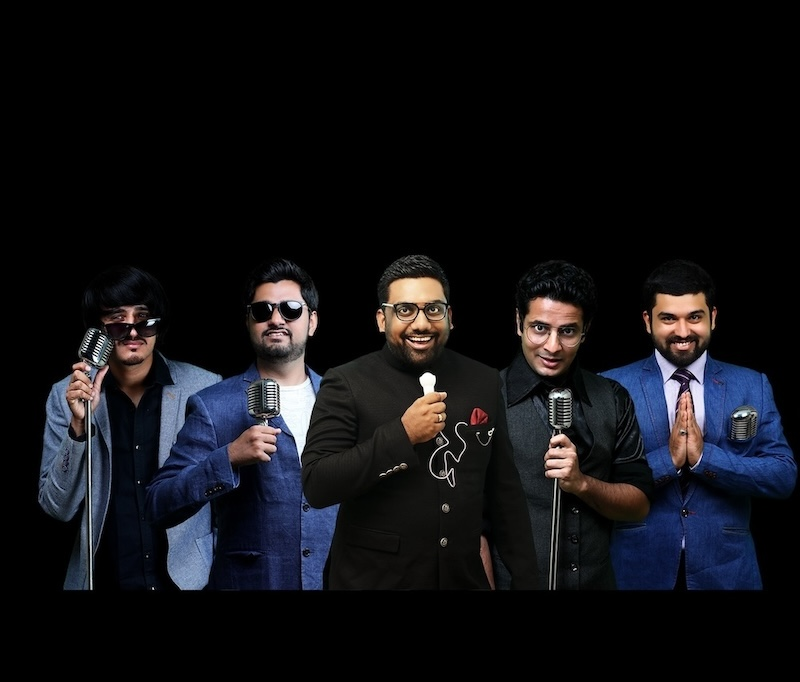

 The Comedy Factory is the first of its kind in Gujarat. Conceptualized by Manan Desai Co- Founder & Programming Director, who has an experience of hosting prime time shows for over 7 years in different FM Radio Stations of Gujarat. Hungry for live entertainment in Gujarat he came up with the idea of The Comedy Factory.
We are in the business of manufacturing humour and churning out original content. Our performance area has been in Gujarat & beyond and we have been performing for private affairs & corporate shows all over India. We pioneered Urban Standup Comedy in Gujarat and we have been at it for more than 4 years now and we are just getting started. One of our highlights apart from standup comedy is Improv Comedy! Improv Comedy consists of acts that are decided on the spot and improvised. We also perform Musical Comedy & Sketch Comedy. Currently, we are a team of 8 members, Manan Desai, Vidya Desai, Ojas Rawal, Aariz Saiyed, Aakash Mehta, Chirayu Mistry, Deep Vaidya & Neelaksh Mathur. These mad people ensure that The Comedy Factory dishes, out a perfect concoction of fun in three different languages. English, Hindi & Gujarati. We have the most popular YouTube channel which gives original Gujarati content along with Hindi & English sketches or videos from time to time. If you are the generous kind who likes to provide entertainment to their loved ones or their employees, we can take your events to a whole new level of insanity. After a short stint in television last year, The Comedy Factory is ready to take on the Gujarati Cinema this year & bound to expand their wings further. Nominated for FORBES TOP 100 CELEBRITY LIST, this diverse group of artists are prepared & passionate to set new avenues and benchmarks for talent in Gujarat.